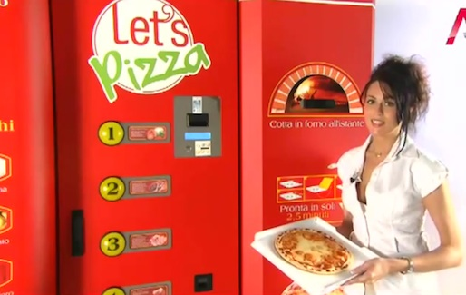

RETURN TO MAIN PAGE
WILLKOMMEN IN MA&MO LIEFERSERVICE Wir bei MA&MO HEIMSERVICE begrüßen Sie recht Herzlich! Wir bieten Internationale Spezialitäten, die Sie nie wieder vergessen werden. Hier ist für jeden Geschmack etwas dabei. Sie finden eine Vielzahl von Gerichten in unserem digitalen Menü, dort können Sie natürlich ganz bequem online bestellen. Alle unsere Gerichte werden Sie überzeugen! Unsere Internationale Küchenmitarbeiter bringen Jahrelange Erfahrung mit und arbeiten mit heimischen Rezepten, die Sie auch schmecken werden. Sie werden unseren erstklassigen Service mit einem Lächeln belohnen. Zu Ihrer Bequemlichkeit liefern wir auch gerne zu Ihnen nach Hause. Wenn Sie einen besonderen Wunsch für größere Anlässe haben, sind wir natürlich auch bereit Ihnen mit einem Top-Angebot entgegen zu kommen. Sprechen Sie uns hierzu einfach nur an. Für all unsere Gerichte verwenden wir nur hochwertige Produkte. Alle unsere Gerichte werden komplett frisch zubereitet, das ist der Schlüssel zu unserer Qualität. Unsere Pizza wird Sie an einer heimischen italienischen Pizza erinnern. Es wird knusprig und gesund sein. Sie können selbstverständlich auch die Teigdicke Ihrer Pizza selbst bestimmen,
